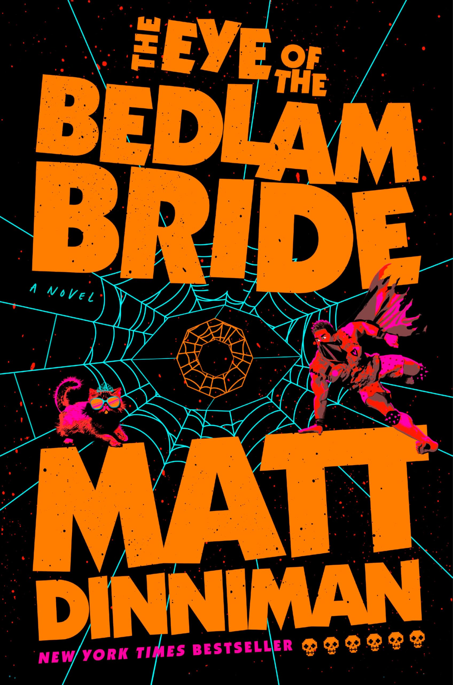

Who I am.
Driven by curiosity, shaped by experimentation. An exploration of what led to engineering and the pursuit of learning beyond the classroom.

How I got here.
I'm drawn to problems that live at the seam between physical systems and the software that models, controls, or communicates about them. That's put me at a particular intersection: a mechanical engineer who actually writes the code, and a software builder who can read a stress plot.
At UBC I'm in the Mechanical Engineering program's Mechatronics/Mechanical Design (BMMD) option, which means coursework spans structures and dynamics on one side and embedded systems and control on the other. I'm also on the co-op stream, so the degree alternates with industry placements — most recently in medical devices.
Outside the classroom, most of my serious engineering hours go into UBC Formula Electric — the university's FSAE electric car program. I started as a suspension and analysis engineer, built tooling the team still uses, and stepped up to Chassis Lead for the 2026 season, owning the full structural package from concept through competition.
My philosophy: precision, traceability, and tools that outlive the person who wrote them. I write documentation because future-me will need it. I build pipelines instead of one-off scripts because the team will grow. I do the math because the part might fail.
Building more than just a race car.
FSAE is a student competition where teams design, build, and race their own formula-style car. It's the thing that eats most of my free time outside of class — and I wouldn't have it any other way.
// how it started
I joined as a first-year with no suspension experience and a lot of curiosity. What began as tagging along to shop nights turned into late evenings tuning models on my laptop, and eventually the genuinely strange feeling of watching a car turn a corner the way my spreadsheet said it would.
// chassis lead, now
These days I'm leading the chassis program, which mostly means trading quiet analysis work for whiteboard arguments about tube geometry, keeping twenty people's designs compatible, and a lot of coffee before deadlines. It's stressful in the best way — and still the highlight of my week.
What else drives me.

CURRENTLY READING